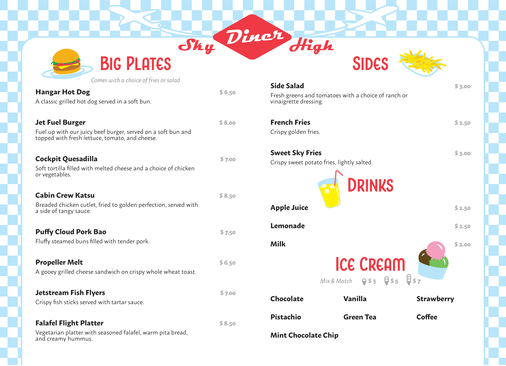

Sky High Diner Menu

I designed a kid's menu for a fictional airport diner called Sky High Diner with an emphasis on diner and aviation elements. I organized the layout using Adobe Indesign and created the illustrations in Adobe Illustrator.
Made with Adobe InDesign and Illustrator.